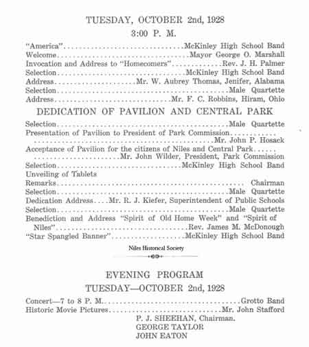

Ward-Thomas Museum


Central Park
Ward — Thomas
Museum
Home of the Niles Historical Society
503 Brown Street Niles, Ohio 44446
Click here to become a Niles Historical Society Member or to renew your membership
Click on any photograph to view a larger image, click on image again to zoom into photograph.
PO1.1064
The 1918 map shows Central High School where Central Park would be built in 1928. |
Central Park City or Central Park in Niles was located on the site of the old Central School on the corners of State Street and Church Street. The Park was dedicated October 1928. The pool was 50 foot in diameter and 14 inches deep in the center. The pavilion, named the Thomas Pavilion was a gift to the City of Niles by Margaretta Clingan and Mary Ann Waddell. In the middle of the wading pool was the "Spirit of Education" fountain donated by Mrs. T.E. Thomas. Daughters of Veterans furnished the flag pole. Several trees were donated, ncluding one Silver Maple from Elizabeth Russell in honor of her husband who was killed during WWI. Through the years many people enjoyed the free band concerts and the children, under the age of eight, played in the wading pool. Rotary, Kiwanis and Exchange Clubs each donated a bed of flowers to add to the beauty of the landscape. Frank C. Robbins, the first graduate of Central School in 1875, spoke at the dedication of Central Park. The park is gone and in its place are the Central Park Apartments for the elderly. |
|
| |
||
|
Aerial picture of Central Park
in 1933. |
 |
A photo of the band shell that was located in Central Park on the grounds where the first brick schoolhouse was built. 1931 picture of the Niles City Band in Central Park in the Thomas Pavilion. Band directed by Arnold Campana. PO1.14 |
| |
||
View of fountain in Central Park. The wading pool has been filled in with plantings. SO11.220 |
Urban Area Neighbor Developement Program (from Central Park, looking south along East State) Dated June 11, 1972. Note Shaker Building on upper left. PO1.185 |
Photo of sidewalks and Central Park. The fountain is barely visible through the trees on the upper right. PO1.186 |
| |
||
Central High School - Between 1854 and 1870 the population of Niles had mushroomed from 1000 to 3000 people. The need for better educational facilities resulted in the building of the city's first high school. Its construction began in 1870 and it opened in May 1871, with six teachers, including the principal. It was built at Furnace and Church Streest. It was a red brick building with three stories and a basement, and cost $37,980. PO1.1178 |
Children playing and splashing in the Central Park wading pool. The band pavillion is in the background. The fountain statue was restored in 1947 when materials and manpower became available after World War II. |
Central Park Apartments. In April of 1970, clergy and laymen incorporated into the Niles Churches for Housing, Inc. Nine area Catholic and Protestant churches participated. This building was dedicated April 27, 1975. It is located on the old Central School site. PO1.407 |
|
|
||


{kind=link}
{kind=link}
{kind=link}
{kind=link}
{kind=link}
{kind=link}
{kind=link}
{kind=link}
{kind=link}